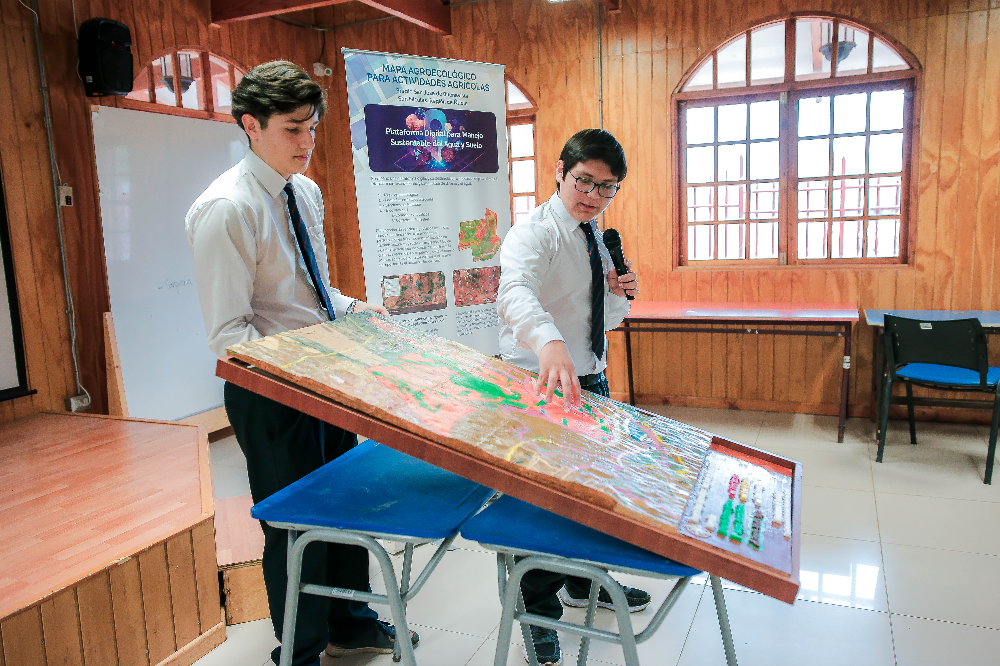
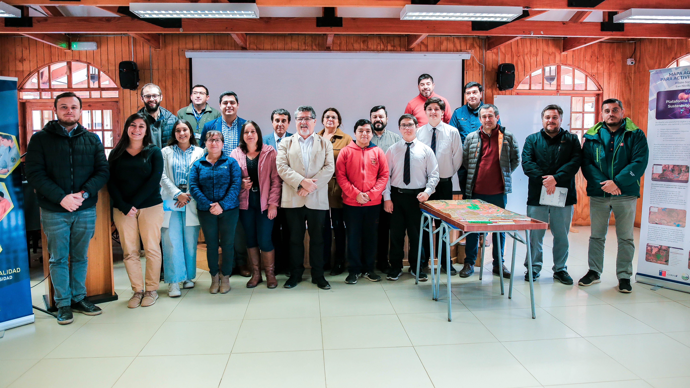
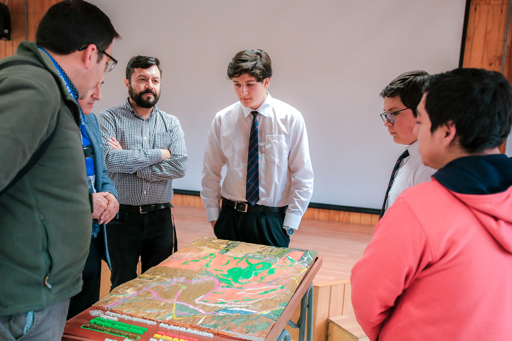

Imágenes de proyectos de sustentabilidad
Esta galería reúne algunas imágenes del invernadero, la acuaponía, el biodigestor y otros espacios vinculados al trabajo de sustentabilidad del liceo. Puedes navegar con los botones o con las flechas del teclado.


